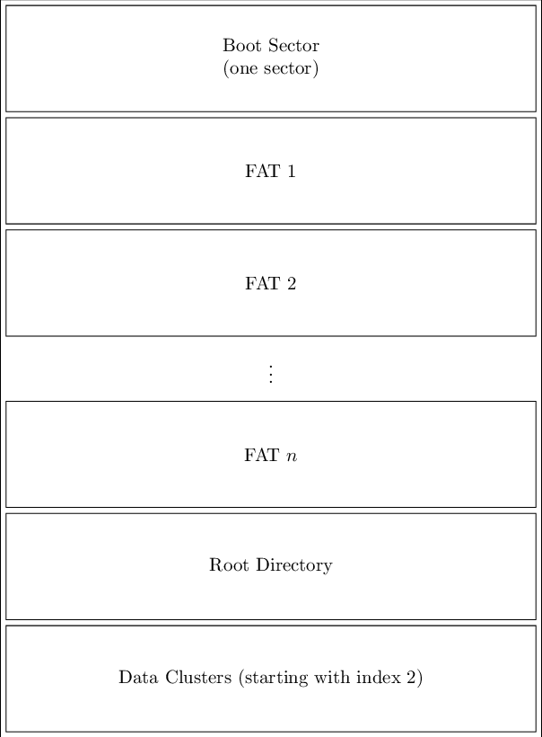

In this lab, we are going to analyze how a file system stores its data on disk. Modern file systems are relatively complicated, so we are going to look at how the old file system "FAT12" was used to store files on floppy disks. FAT12 is the predecessor of FAT16 and FAT32 (which is still widely used on USB sticks).
This document does not contain the full specification of FAT12. For a more detailed description of the various structures that are used throughout this filesystem, take a look at the following resources:
The file fat12.img contains the raw contents of a floppy disk. To view the contents of this file, open it in a hex editor. You can use the free hex editor xvi32, which is also available on the Programs disk (P:). Students with their own laptops can download xvi32, or can download an alternative such as Cygnus, Visual Studio, Hex Fiend, or 0xed.
Take a few moments to get used to your hex editor. In particular, notice that the values of the bytes (in hexadecimal notation) are show in the left column, and the corresponding ASCII value in the right column. The number that precedes the rows is the start offset of the first byte in the row.
A disk can be divided into multiple partitioned, with each partition having its own file system. For this course, we will ignore this possibility and just assume a disk contains one single partition which uses the FAT12 file system.
The disk is structured as follows:
We give a short description of each part:
Like any other partition, the first sector of a FAT12 volume is a special sector: the boot sector. It contains information about the partition. The boot sector (the first 512 bytes of the partition) is marked in yellow. The information stored in this sector is defined in the table below. Fill in the bytes values where asked.
| Offset | Length in bytes | Description | Bytes |
|---|---|---|---|
| 0x00 | 3 | Instruction(s) to jump to the bootstrap code | |
| 0x03 | 8 | Name of the formatting OS | |
| 0x0B | 2 | Bytes per sector | |
| 0x0D | 1 | Sectors per cluster | |
| 0x0E | 2 | Reserved sectors from the start of the volume | |
| 0x10 | 1 | Number of FAT copies | |
| 0x11 | 2 | Number of possible root entries | |
| 0x13 | 2 | Small number of sectors | |
| 0x15 | 1 | Media descriptor | |
| 0x16 | 2 | Sectors per FAT | |
| 0x18 | 2 | Sectors per track | |
| 0x1A | 2 | Number of heads | |
| 0x1C | 4 | Hidden sectors | |
| 0x20 | 4 | Large number of sectors (used when volume size exceeds 32MB) | |
| 0x24 | 1 | Drive number | |
| 0x25 | 1 | Reserved | |
| 0x26 | 1 | Extended boot signature (indicates that the next three fields are available) | |
| 0x27 | 4 | Volume serial number | |
| 0x2B | 11 | Volume label (should be the same as in the root directory) | |
| 0x36 | 8 | File system type (should be FAT12) | |
| 0x3E | 448 | Bootstrap code | |
| 0x1FE | 2 | Boot sector signature (should be 0xAA55) |
Use this table to verify the following properties:
MSDOS5.0".FAT12".Note that if a number is stored in 2 or 4 bytes, you should reverse these bytes!
For example, if you read the
bytes A4 70, this actually represents the number
0x70A4. This is because the Intel processor stores integers as
little endian (the least-significant byte comes first).
Likewise, 11 22 33 44 corresponds to
0x44332211.
Convert the following bytes to decimal values:
| Bytes | Decimal value |
|---|---|
01 |
|
FF 00 |
|
00 FF |
|
01 02 03 04 |
After the boot sector, a number of copies of the File Allocation Table (FAT) are stored. Having more than one copy can be useful if one of the copies gets corrupted due to bad disk blocks.
Each FAT has a certain size and thus requires a certain amount of space on disk.
After the FATs, the contents of the root directory is stored. This root directory contains references to the files and directories that are stored on the root of the partition (i.e. typically at A:\ in Windows). Each file or directory entry is 32 bytes. The root directory has a maximum size, which is preallocated (meaning it cannot grow or shrink, and is not part of the "normal" data area).
All the remaining sectors after the root directory can be used to store folder (or subdirectory) data. Now that you know how large each section is, you should be able to calculate the offsets of each section in the image. Note that each section immediately follows the previous (i.e. there is no wasted space in between).
| Boot sector | 0x0000 |
| FAT 1 | 0x0200 |
| FAT 2 | 0x |
| Root directory | 0x |
| Data section | 0x |
Each directory (including the root directory) consists of one or more sectors that contain directory entries. A directory entry contains information about a subdirectory or file that is contained in the directory. The structure of one such entry is shown below. Note that the size of an entry is 32 bytes.
| Offset | Length in bytes | Description |
|---|---|---|
| 0x00 | 8 | The filename |
| 0x08 | 3 | The file extension |
| 0x0B | 1 | File attributes |
| 0x0C | 1 | Reserved ofr Windows NT |
| 0x0D | 1 | Creation - Millsecond stamp (actual 100th of a second) |
| 0x0E | 2 | Creation time |
| 0x10 | 2 | Creation date |
| 0x12 | 2 | Last access date |
| 0x14 | 2 | Reserved for FAT32 |
| 0x16 | 2 | Last write time |
| 0x18 | 2 | Last write date |
| 0x1A | 2 | First logical cluster of the file |
| 0x1C | 4 | File size in bytes |
As an example take the following 32 bytes:
| 54 | 45 | 53 | 54 | 20 | 20 | 20 | 20 | 44 | 44 | 20 | 20 | 00 | 64 | 85 | 1B |
| 5A | 33 | 5A | 33 | 00 | 00 | 85 | 1B | 5A | 33 | 03 | 01 | B0 | 04 | 00 | 00 |
Interpreting these as a directory in the FAT12 filesystem gives us the following results.
| 54 | 45 | 53 | 54 | 20 | 20 | 20 | 20 | 44 | 44 | 20 | 20 | 00 | 64 | 85 | 1B |
| 5A | 33 | 5A | 33 | 00 | 00 | 85 | 1B | 5A | 33 | 03 | 01 | B0 | 04 | 00 | 00 |
The first 8 bytes contain the filename. We can look up the corresponding ASCII characters in an ASCII table.
The filename becomes "test ". The extension
(the following three bytes) will be "dd ". Spaces are used as padding, so the actual filename is
test.dd.
The first byte of the filename is special and can have different meanings. The following rules apply:
0x00 is interpreted as "stop the search, there are no more entries in this directory".
0x20 (space).
0xE5 is interpreted as "the entry is free".
| 54 | 45 | 53 | 54 | 20 | 20 | 20 | 20 | 44 | 44 | 20 | 20 | 00 | 64 | 85 | 1B |
| 5A | 33 | 5A | 33 | 00 | 00 | 85 | 1B | 5A | 33 | 03 | 01 | B0 | 04 | 00 | 00 |
The next byte contains the attributes of the file or directory. A number of attributes can be set. If an attribute is set, a specific bit is set in the value of the byte (this is also called a bit vector). There are 8 possible bits that can be set in the byte, but only the first 6 bits have a specific meaning:
| Bit | Description |
|---|---|
| 0 | The file is read-only. |
| 1 | The file is hidden. |
| 2 | The file is a system file. |
| 3 | The directory entry contains a volume label. |
| 4 | The entry represents a directory (not a file). |
| 5 | The File should be archived (used for backup purposes). |
0x20 to binary:
The binary value of the byte 20 is 00100000. Bit 0 is the rightmost bit, bit 7 is the leftmost bit.
In this case, only the archive attribute is set for the file.
| 54 | 45 | 53 | 54 | 20 | 20 | 20 | 20 | 44 | 44 | 20 | 20 | 00 | 64 | 85 | 1B |
| 5A | 33 | 5A | 33 | 00 | 00 | 85 | 1B | 5A | 33 | 03 | 01 | B0 | 04 | 00 | 00 |
A directory entry contains the creation time, creation date, last access date, last write time, and last write date. Both the time components and the date components use 2 bytes (or 16 bits) each. The bits are used as follows:
The time uses 5 bits to store the hours, 6 bits for the minutes and 5 for the seconds. Note that we
cannot store 60 values in the 5 bits that are allocated to the seconds component. This means that
we will only store even values, and that the calculated value should be doubled. In the example,
the bytes that store the last write time contain the values 85 1B, which represents the number
0x1B85 or its binary value .
From this value, we extract
The 16 bits in the date component are distributed as follows: 7 bits for the amount of years since 1980, 4 bits for the month, and 5 bits for the day. In the example, if we extract the last write date you should get the date .
| 54 | 45 | 53 | 54 | 20 | 20 | 20 | 20 | 44 | 44 | 20 | 20 | 00 | 64 | 85 | 1B |
| 5A | 33 | 5A | 33 | 00 | 00 | 85 | 1B | 5A | 33 | 03 | 01 | B0 | 04 | 00 | 00 |
This 16-bit value contains the identification number of the first (logical) cluster that
contains the data of this file. If the directory entry is a subdirectory (i.e. has the "subdirectory"
attribute set), then it points to the first cluster that contains the directory entries of this subdirectory.
In the example, the bytes 03 01 represent the value 0x103, thus the logical cluster 259 contains
the first chunk of the file.
| 54 | 45 | 53 | 54 | 20 | 20 | 20 | 20 | 44 | 44 | 20 | 20 | 00 | 64 | 85 | 1B |
| 5A | 33 | 5A | 33 | 00 | 00 | 85 | 1B | 5A | 33 | 03 | 01 | B0 | 04 | 00 | 00 |
The file size is stored in the last 4 bytes of the directory entry. This limits the maximum
file size on a partition to 232 bytes or 4Gb. The bytes B0 04 00 00 represent a filesize of
0x or bytes.
5A 57 41 52 54 4B 41 53 20 20 20 10 00 00 36 33
5A 33 5A 33 00 00 36 33 5A 33 40 01 00 00 00 00
Up until now, we have seen how we can find and interpret the contents of the root directory, and from there on find all the files and subdirectories on the partition. For each file, we know the start cluster, but since a cluster is only 512 bytes, most files will consist of more than one cluster. Hence, we need a mechanism to find the next clusters of a file, given its first cluster.
For this purpose, FAT12 stores a file allocation table at the beginning of the volume. This table is a list of 12-bit entries, with one entry for each cluster in the data section. Because our image consists of 2847 clusters, the file allocation table will contain 2847 12-bit entries, for a total size of 4269 bytes.
The entries in the FAT are actually pointers to the next logical cluster in the data section. Some values have a special meaning:
0x000: Free cluster
0x001, and 0xFF0-0xFF6: Reserved
0xFF7: Bad cluster
0xFF8-0xFFF: This is the last cluster of the file
All other values (0x002 - 0xFEF) are pointers to the next cluster of the file.
Consider the above figure where a user wants to read the file foobar.txt. The operating
system finds the correct directory entry that stores the information of this file. From the directory
entry, we find that the first logical cluster of the file is cluster 0x5CA. In order to find the second
cluster of the file, we go to the FAT and look up the value that is stored in the FAT entry with
index 0x5CA. We find the value 0x13A, which is the identification number of the second cluster of
the file. The third cluster can be found by looking up the value of FAT entry 0x13A, which gives us
the cluster ID 0x2B0. Finally, if we look up the value of FAT entry 0x2B0, we find the value 0xFF8.
This is one of the special values mentioned above, which indicates that this is the last cluster of the
file. Putting this all together, we can conclude that the file foobar.txt consists of the logical clusters
0x5CA, 0x13A, 0x2B0 (in that order).
Every FAT entry is a 12-bit value. This means that one entry cannot be stored in one byte, yet it
also does not require the full capacity of two bytes. In order not to waste space, two FAT entries are
stored together in 3 bytes (or 24 bits). You can convert from the hexadecimal values of the three
bytes to the hexadecimal values of the two FAT entries using the following rule (pay attention to
the order!): UV WX YZ becomes FAT entries 0xXUV and 0xYZW.
Imagine the first 12 bytes of a FAT are F0 FF FF 00 40 00 05 F0 FF 00 00 00.
Every FAT entry is 12 bits long, which means these 12 bytes contain 8 FAT entries:
0xFF0Clusters 0 and 1 are never used in the FAT, so you can ignore them. Which clusters are free? (List them in increasing order)
If the first cluster of a file is cluster 3, its data is spread among clusters , and . The file is at most bytes long. Say the file contains 1200 bytes, then bytes of the last cluster remain unused. This is called slack space and is actually lost space due to internal fragmentation.
Hint To find the correct bytes in the FAT that correspond to a certain cluster ID, you can use this simple formula: (Cluster / 2) × 3. This gives you the byte offset of the first of the three bytes that contain two FAT entries. Keep in mind that this is the byte offset from the start of the FAT; you need to add the offset of the FAT itself to this number as well! If Cluster ID is even, you need the first FAT entry, if it is odd you need the second FAT entry.
The cluster IDs that we have been using are logical clusters, meaning that they represent the cluster number starting from the beginning of the data section. The numbers 0 and 1 have a special meaning and are not used as cluster IDs. So the first cluster of the data section has cluster ID 2. If we want to know where exactly a logical cluster is stored on the disk, we need to it into a physical clusters.
We have already calculated that there are 33 clusters before the start of the data section (1 boot cluster, 9 clusters for each FAT, and 14 clusters for the root directory). Using this information, and knowing that the first valid cluster ID is 2, we can deduce the following formula to calculate the physical cluster ID from a given logical cluster ID: physicalID = 33 + logicalID - 2.
Once we know the physical cluster ID, we can calculate the physical location of that cluster on the disk by multiplying the ID with the cluster size (512 bytes).